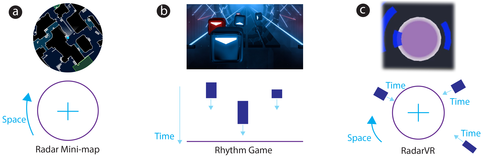

RadarVR: Exploring Spatiotemporal Visual Guidance in Cinematic VR

Figure 1: RadarVR provides spatiotemporal visual guidance in cinematic virtual reality (i.e., 360° videos). (a) Radar mini-maps are used for spatial navigation in games [58]. (b) Rhythm games encode temporal information as distance from a reference line [26]. (c) RadarVR blends these familiar design metaphors and visualizes regions of interest (ROIs) in space and time around a radar for visual guidance. RadarVR ofers viewers a look-ahead time and allows them to plan their head motion in advance of upcoming ROIs.
Abstract
In cinematic VR, viewers can only see a limited portion of the scene at any time. As a result, they may miss important events outside their field of view. While there are many techniques which offer spatial guidance (where to look), there has been little work on temporal guidance (when to look). Temporal guidance offers viewers a look-ahead time and allows viewers to plan their head motion for important events. This paper introduces spatiotemporal visual guidance and presents a new widget, RadarVR, which shows both spatial and temporal information of regions of interest (ROIs) in a video. Using RadarVR, we conducted a study to investigate the impact of temporal guidance and explore trade-offs between spatiotemporal and spatial-only visual guidance. Results show spatiotemporal feedback allows users to see a greater percentage of ROIs, with 81% more seen from their initial onset. We discuss design implications for future work in this space.
Bibtex
@inproceedings{10.1145/3586183.3606734,
author = {Liu, Sean J. and Henrikson, Rorik and Grossman, Tovi and Glueck, Michael and Parent, Mark},
title = {RadarVR: Exploring Spatiotemporal Visual Guidance in Cinematic VR},
year = {2023},
isbn = {9798400701320},
publisher = {Association for Computing Machinery},
doi = {10.1145/3586183.3606734},
booktitle = {Proceedings of the 36th Annual ACM Symposium on User Interface Software and Technology},
series = {UIST '23}
}